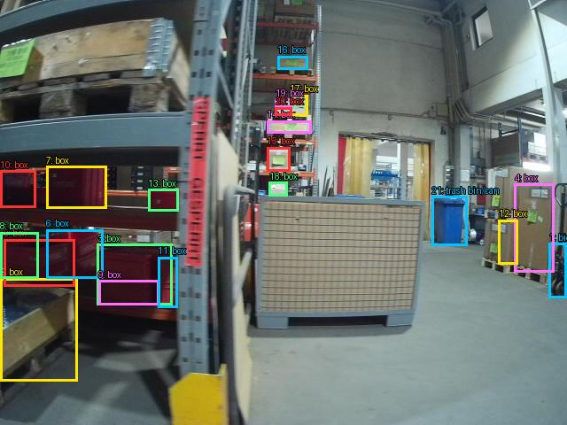
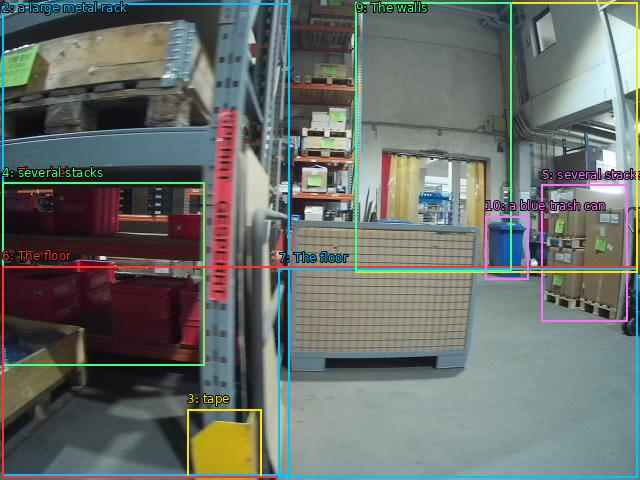

The image shows a large warehouse with multiple shelves and racks. The shelves are filled with various items such as cardboard boxes, pallets, and other storage containers. On the left side of the image, there is a large metal rack with a yellow caution tape attached to it. In the center of the room, there are several stacks of cardboard boxes and pallets stacked on top of each other. The floor is made of concrete and there are a few other items scattered around the room. The walls are painted white and the ceiling is high with pipes and ducts. There is a blue trash can in the background. The overall atmosphere of the space is cluttered and organized.


Original · Caption raw · Grounding raw · Koordinate
Številke so lokalni ID regije. Dolge slikovne oznake so skrajšane; spodaj so celotne fraze. Napovedane regije se lahko prekrivajo ali opisujejo skupine.
| ID | Celotna fraza | bbox xyxy |
|---|---|---|
| 1 | The shelves | [2.240000009536743, 182.63999938964844, 205.1199951171875, 365.03997802734375] |
| 2 | a large metal rack | [2.240000009536743, 3.119999885559082, 289.6000061035156, 475.91998291015625] |
| 3 | tape | [187.1999969482422, 409.1999816894531, 261.44000244140625, 477.8399963378906] |
| 4 | several stacks | [2.240000009536743, 182.63999938964844, 204.47999572753906, 365.03997802734375] |
| 5 | several stacks | [541.760009765625, 184.55999755859375, 627.5199584960938, 321.3599853515625] |
| 6 | The floor | [2.240000009536743, 266.1600036621094, 637.1199951171875, 477.3599853515625] |
| 7 | The floor | [278.7200012207031, 268.0799865722656, 637.1199951171875, 477.3599853515625] |
| 8 | The walls | [355.5199890136719, 2.1599998474121094, 637.1199951171875, 272.8800048828125] |
| 9 | The walls | [355.5199890136719, 2.6399998664855957, 511.67999267578125, 271.91998291015625] |
| 10 | a blue trash can | [485.44000244140625, 216.239990234375, 528.3200073242188, 279.6000061035156] |